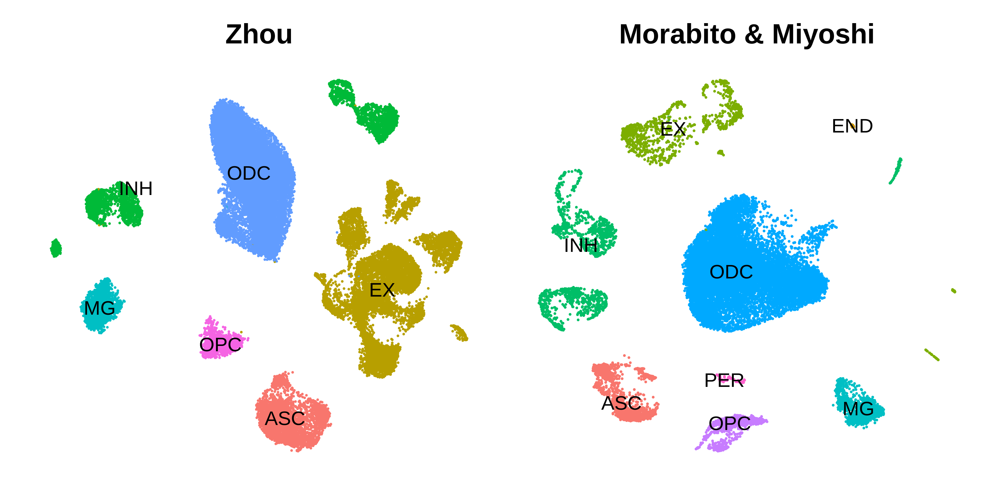
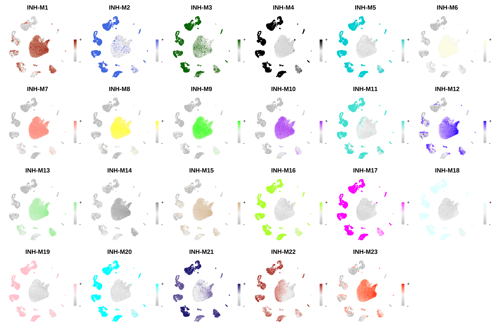
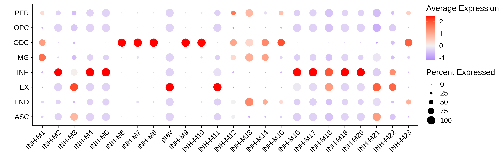

projecting_modules.RmdIn this tutorial, we begin to analyze the co-expresion modules detected in one dataset in external datasets. Rather than building a new co-expression network from scratch in a new dataset, we can take the modules from one dataset and project them into the new dataset. Before starting this tutorial, make sure that you have constructed the co-expression network as in the hdWGCNA basics. The main hdWGCNA tutorials have been using the control brain samples from this publication, and now we will project the inhibitory neruon modules from Zhou et al into the control brain samples from Morabito and Miyoshi 2021.
First we must load the data and the required libraries:
# single-cell analysis package
library(Seurat)
# plotting and data science packages
library(tidyverse)
library(cowplot)
library(patchwork)
# co-expression network analysis packages:
library(WGCNA)
library(hdWGCNA)
# network analysis & visualization package:
library(igraph)
# using the cowplot theme for ggplot
theme_set(theme_cowplot())
# set random seed for reproducibility
set.seed(12345)
# load the Zhou et al snRNA-seq dataset
seurat_ref <- readRDS('data/Zhou_control.rds')
# load the Morabito & Miyoshi 2021 snRNA-seq dataset
seurat_query <- readRDS(file=paste0(data_dir, 'Morabito_Miyoshi_2021_control.rds'))In this section we project the modules from the Zhou et al inhibitory neuron hdWGCNA experiment into the Morabito & Miyoshi et al control brain dataset. We refer to the Zhou et al dataset as the “reference” dataset, and the Morabito & Miyoshi et al dataset as the “query” dataset. Just as we had done before when building the co-expression network from scratch, the basic single-cell pipeline has to be 0done on the query dataset (normalization, scaling, variable features, PCA, batch correction, UMAP, clustering). First we make a UMAP plot to visualize the two datasets to ensure they have both been processed.
p1 <- DimPlot(seurat_ref, group.by='cell_type', label=TRUE) +
umap_theme() +
ggtitle('Zhou') +
NoLegend()
p2 <- DimPlot(seurat_query, group.by='cell_type', label=TRUE) +
umap_theme() +
ggtitle('Morabito & Miyoshi') +
NoLegend()
p1 | p2
Next we will run the function ProjectModules to project the modules from the reference dataset into the query dataset. If the genes used for co-expression network analysis in the reference dataset have not been scaled in the query dataset, Seurat’s ScaleData function will be run from within ProjectModules. We perform the following analysis steps to project the modules into the query dataset:
ProjectModules to compute the module eigengenes in the query dataset based on the gene modules in the reference dataset.ModuleExprScore to compute hub gene expression scores for the projected modules.ModuleConnectivity to compute intramodular connectivity (kME) in the query dataset.
# Project modules from query to reference dataset
seurat_query <- ProjectModules(
seurat_obj = seurat_query,
seurat_ref = seurat_ref,
# vars.to.regress = c(), # optionally regress covariates when running ScaleData
group.by.vars = "Batch", # column in seurat_query to run harmony on
wgcna_name_proj="Zhou_projected", # name of the new hdWGCNA experiment in the query dataset
wgcna_name = "tutorial" # name of the hdWGCNA experiment in the ref dataset
)As you can see it only takes running one function to project co-expression modules from one dataset into another using hdWGCNA. Optionally, we can also compute the hub gene expression scores and the intramodular connectivity for the projected modules. Note that if we do not run the ModuleConnectivity function on the query dataset, the kME values in the module assignment table GetModules(seurat_query) are the kME values from the reference dataset.
# compute module hub gene expression scores for projected modules:
seurat_query <- ModuleExprScore(
seurat_query,
n_genes = 25,
method='Seurat'
)
# compute intramodular connectivity
seurat_query <- ModuleConnectivity(seurat_query, assay="RNA", slot="data")Save the query Seurat object after projecting modules.
saveRDS(seurat_query, file=paste0(data_dir, 'Morabito_Miyoshi_2021_control.rds'))
seurat_query <- readRDS(paste0(data_dir, 'Swarup2021_control_hdWGCNA_modpres.rds'))We can extract the projected module eigengenes using the GetMEs function.
projected_hMEs <- GetModules(seurat_query)The projected modules can be used in most of the downstream hdWGCNA analysis tasks and visualization functions, such as module trait correlation, however it is important to note that some of the functions cannot be run on the projected modules. In particular, we cannot make any of the network plots since we did not actually construct a co-expression network in the query dataset, so running functions such as RunModuleUMAP and ModuleNetworks will throw an error.
In this section we demonstrate some of the visualization functions for the projected modules in the query dataset. First, we use the ModuleFeaturePlot function to visualizes the hMEs on the UMAP:
# make a featureplot of hMEs for each module
plot_list <- ModuleFeaturePlot(
seurat_query,
features='hMEs',
order=TRUE
)
# stitch together with patchwork
wrap_plots(plot_list, ncol=6)
Next we will make a dot plot for each of the modules grouped by cell type identity.
# get the projected hMEs
projected_hMEs <- GetMEs(seurat_query, harmonized=TRUE)
# add hMEs to Seurat meta-data:
seurat_query@meta.data <- cbind(
seurat_query@meta.data,
projected_hMEs
)
# plot with Seurat's DotPlot function
p <- DotPlot(
seurat_query,
features = colnames(projected_hMEs),
group.by = 'cell_type'
)
# flip the x/y axes, rotate the axis labels, and change color scheme:
p <- p +
RotatedAxis() +
scale_color_gradient2(high='red', mid='grey95', low='blue') +
xlab('') + ylab('')
p
We encourage users to explore the projected modules using hdWGCNA’s various visualization and analysis functions. In the next tutorial, we cover statistical methods to determine the preservation and reproducibility of co-expression modules between reference and query datasets. Additionally, we include another tutorial to projet modules in special cases where the two datasets come from different species, or from different -omic modalities such as scATAC-seq.